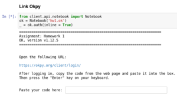

Homeworks
How to access the assignment and submit it to okpy:
This page contains a list of links to PHY151 homeworks.
You can also access assignments from a link posted on the bCourses website, under “Assignments", which contains the most updated information.
- HW1 (due Sept 4, 11:59pm): Undergraduate_level/ Graduate_level / Solution
- HW2 (due Sept 10, 11:59pm): Undergraduate_level/ Graduate_level / Solution
- HW3 (due Sept 17, 11:59pm): Undergraduate_level/ Graduate_level / Solution
- HW4 (due Sept 26, 11:59pm): Undergraduate_level/ Graduate_level / Solution
- Project1-Part1 (due Oct 5, 11:59pm): Undergraduate_level/ Graduate_level / Solution
- Project1-Part2 (due Oct 12, 11:59pm): Undergraduate_level/ Graduate_level / Solution
- Project1-Part3 (due Oct 19, 11:59pm): Undergraduate_level/ Graduate_level
- HW5 (due Oct 26, 11:59pm): Undergraduate_level/ Graduate_level
Instructions
During the course of PHY151, you will be writing and running the homeworks in the Data8
IPython Jupyter Notebook environment provided by datahub.berkeley.edu.
Once you click the homework link, the environment will bring you to the Jupyter Notebook file browser interface.
- If login is requested, be sure to use your Berkeley account (
@berkeley.edu). - The initial log in may give a false positive 500 error "Too many Redirections".
Click on the
Homelink at the top of page will bring you to the correct place; Status of this error is tracked as an Issue.
In the file browser, open the main homework notebook (e.g. “HW1.ipynb”) to inspect and finish the homework.
- Puzzled by the interface? Here is an instruction on Notebook Basics
- You do not need to worry about the “tests” folder and .ok file. These are configuration files for the okpy submission system, documented at ok client
You do need to login to the okpy submission system in order to submit the homework. This is usually performed in the first cell of the notebook. Here is an example 
Execute the first cell of the notebook (with Shift+Enter) and make sure that you are successfully logged in.
Depending on how long it is since your last visit of the notebook, you may be prompted to paste your authorization code for OK client.
- Follow the instruction from the cell output to obbtain the authorization code.
- Usually you will be asked to log into okpy with your berkeley email address (@berkeley.edu). Please do NOT use your other email (e.g. @gmail.com) account when logging in.
To finish your homework, carefully read the comments and make changes (define functions, make plots, fill in the blanks, etc).
The last cell (containts a line _ = ok.submit()) will submit your notebook. Run it with Shift+Enter to submit or re-submit.
Here is an example

- You can submit multiple times -- we only grade the lastest submission before the deadline.
- The notebook can be saved to the Data8 system for the duration of the semester. This can be done by clicking the floppy disk (💾), or clicking File/Save and Checkpoint. Have you ever seen a floppy disk?
Past Assignments: To download a Jupyter notebook, right click the link and save it as an .ipynb file.
-
HW1: PDF/ Jupyter notebook
-
HW2: PDF/ Jupyter notebook
-
HW3: PDF/ Jupyter notebook
-
HW4: PDF/ Jupyter notebook
-
HW5: PDF/ Jupyter notebook
-
Project 1: PDF/ Jupyter notebook
-
HW6: PDF/ Jupyter notebook
-
HW7: PDF/ Jupyter notebook
-
HW8: PDF/ Jupyter notebook
-
Project 2: PDF/ Jupyter notebook
-
Project 3: PDF/ Jupyter notebook